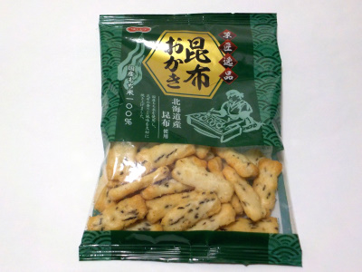
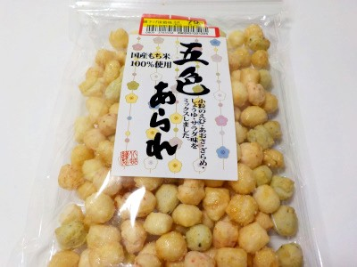

北越の昆布おかき
2024/01/14

おかきは歯ごたえがよくていいですね。この商品はもち米味がしっかりある上に昆布味もあって、とっても美味しかったです。
富山県栃波市太田1891-2
2024/01/14

おかきは歯ごたえがよくていいですね。この商品はもち米味がしっかりある上に昆布味もあって、とっても美味しかったです。
2022/08/10

安くなっていたので買いました。100円以下だと手に取りやすいです。
五色あられの味は、エビ、あおさ、ざらめ、しょうゆ、サラダ味です。
れその味が美味しいんですが、私は「あおさ」味が好きでした。あおさ味をもった沢山食べたいって思いました。
ジッパー付いているので保存し易いです。いい商品だなって思いました。